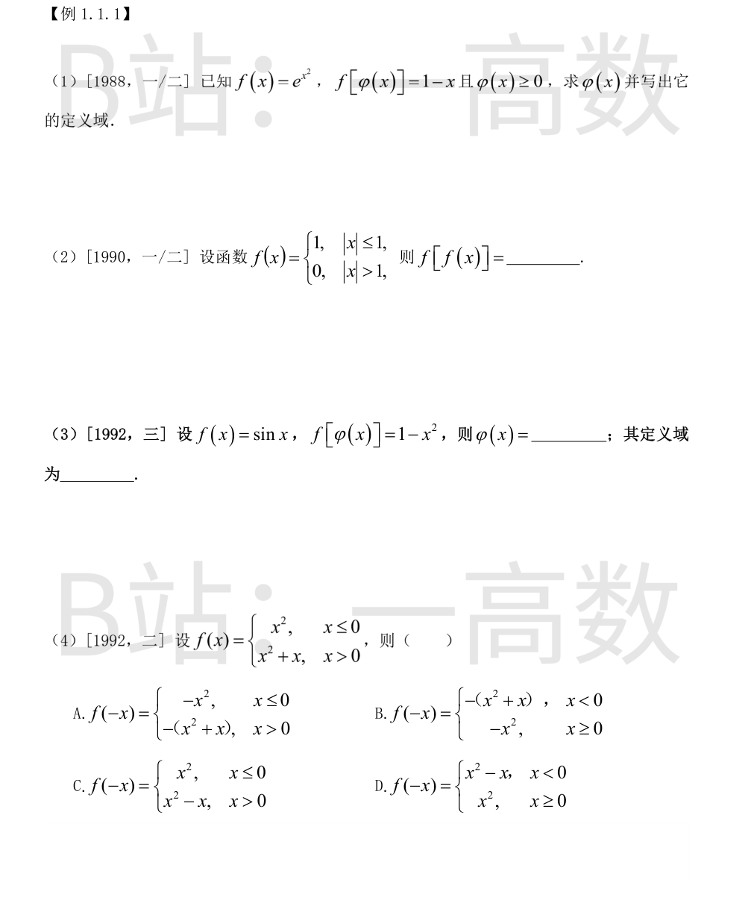
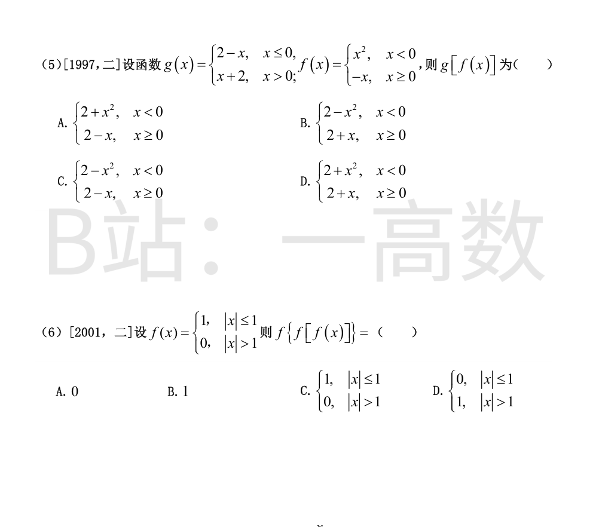
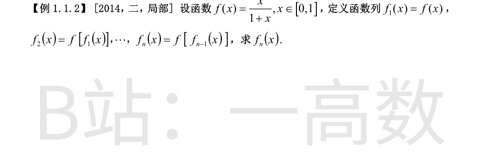
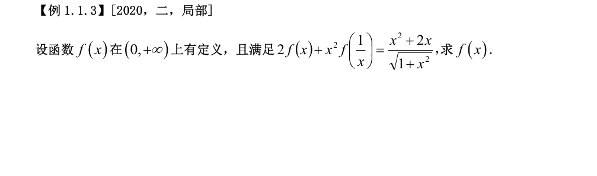
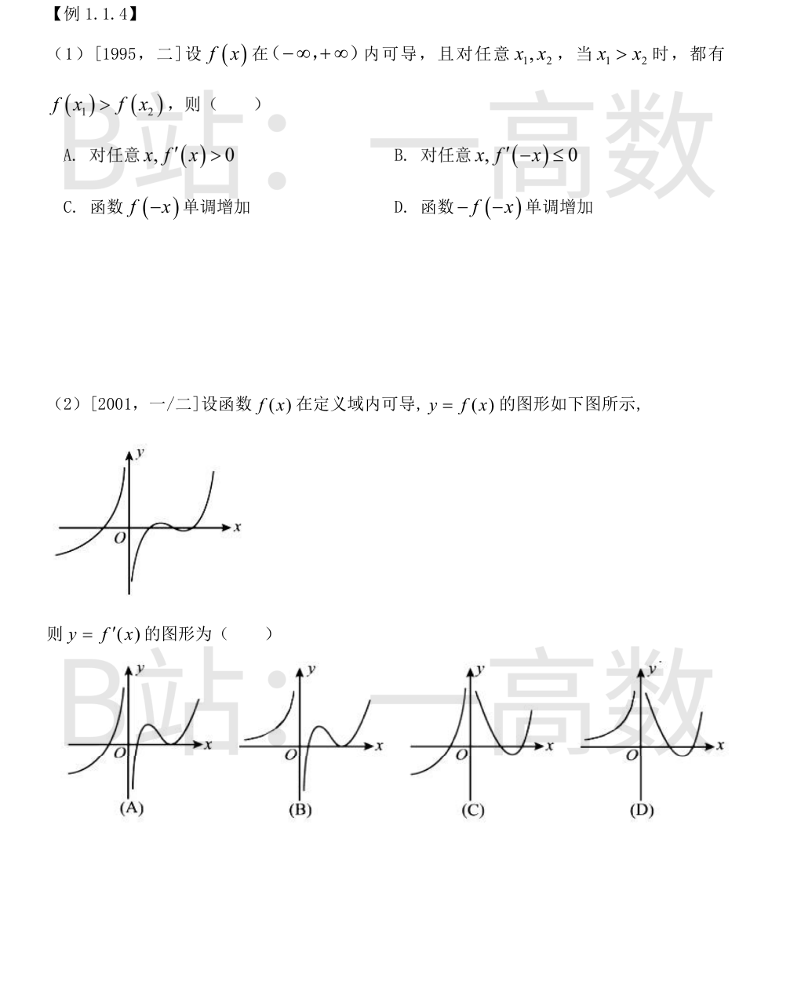
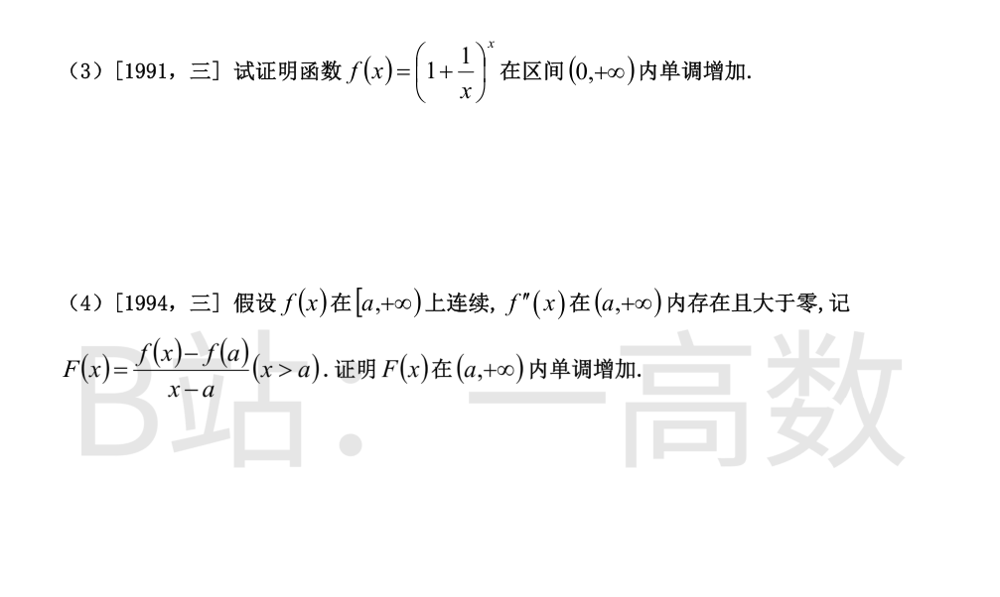
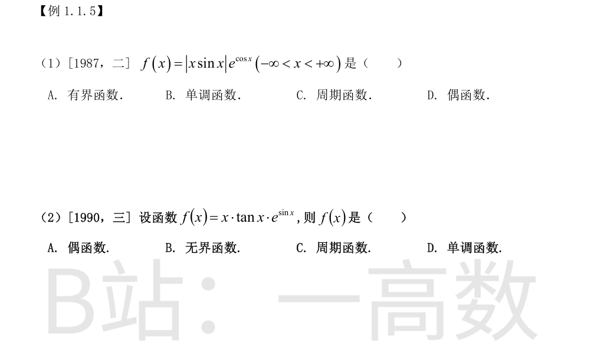

由 $f(x)=e^{x^2}$ 得
$$f[\varphi(x)]=e^{\varphi^2(x)}=1-x.$$
两边取自然对数：$\varphi^2(x)=\ln(1-x)$。又题设 $\varphi(x)\ge 0$，故
$$\varphi(x)=\sqrt{\ln(1-x)}.$$
求定义域：需 $\ln(1-x)$ 有意义且非负，即 $1-x>0$ 且 $1-x\ge 1$，解得 $x\le 0$（此时 $\sqrt{\ln(1-x)}\ge 0$ 自动满足题设条件）。
故 $\varphi(x)=\sqrt{\ln(1-x)}$，定义域为 $(-\infty,0]$。
按定义，$f(x)=\begin{cases}1, & |x|\le 1,\\ 0, & |x|>1.\end{cases}$
对任意 $x$：当 $|x|\le 1$ 时 $f(x)=1$；当 $|x|>1$ 时 $f(x)=0$。两种情形都有 $|f(x)|\le 1$，于是内层函数值恒落在取值 $1$ 的分段区间内：
$$f[f(x)]=1.$$
即对一切 $x$ 有 $f[f(x)]\equiv 1$（常函数）。
由 $f(x)=\sin x$ 得 $f[\varphi(x)]=\sin\varphi(x)=1-x^2$，取反正弦主值即
$$\varphi(x)=\arcsin(1-x^2).$$
求定义域：需 $|1-x^2|\le 1$，即 $-1\le 1-x^2\le 1$，由左边得 $x^2\le 2$，由右边得 $x^2\ge 0$（恒成立），故 $|x|\le\sqrt{2}$。
所以 $\varphi(x)=\arcsin(1-x^2)$，定义域为 $[-\sqrt{2},\sqrt{2}]$。
求 $f(-x)$：把 $f$ 的自变量取为 $u=-x$，并把 $f$ 的分段条件翻译到 $x$ 上。
当 $-x\le 0$ 即 $x\ge 0$ 时，代入 $f(u)=u^2$：$f(-x)=(-x)^2=x^2$；
当 $-x>0$ 即 $x<0$ 时，代入 $f(u)=u^2+u$：$f(-x)=(-x)^2+(-x)=x^2-x$。
故
$$f(-x)=\begin{cases}x^2-x, & x<0,\\ x^2, & x\ge 0.\end{cases}$$
对照选项：A、B 只是给表达式变号而分段区间没有正确对调；C 虽用了 $x^2-x$ 但把它配在了 $x>0$ 段（区间未对调）；只有 D 与上式一致。选 D。
按外层 $g$ 所需，先看内层 $f(x)$ 的取值落在 $g$ 的哪一段。
当 $x<0$ 时，$f(x)=x^2>0$，故代入 $g$ 的 $u>0$ 段：
$$g[f(x)]=g(x^2)=x^2+2=2+x^2;$$
当 $x\ge 0$ 时，$f(x)=-x\le 0$，故代入 $g$ 的 $u\le 0$ 段：
$$g[f(x)]=g(-x)=2-(-x)=2+x.$$
所以
$$g[f(x)]=\begin{cases}2+x^2, & x<0,\\ 2+x, & x\ge 0,\end{cases}$$
对照知选 D。（A 错在前段用了 $2-x$，B 错在前段用 $2-x^2$，C 两段都不对。）
对任意 $x$，$f(x)\in\{1,0\}$；无论 $f(x)=1$ 还是 $f(x)=0$，都有 $|f(x)|\le 1$，故与 T1(2) 同理
$$f[f(x)]=1.$$
从而
$$f\{f[f(x)]\}=f(1)=1\quad(|1|\le 1).$$
即结果为常数 $1$，选 B。（C 选项正是 $f(x)$ 本身，是只复合一次的错误结果。）

（素材取自 2014 年数学二真题局部。）由 $f(x)=\dfrac{x}{1+x}$ 知 $f(u)=\dfrac{u}{1+u}$，故
$$f_n(x)=f\big[f_{n-1}(x)\big]=\frac{f_{n-1}(x)}{1+f_{n-1}(x)}.$$
取倒数看结构：
$$\frac{1}{f_n(x)}=\frac{1+f_{n-1}(x)}{f_{n-1}(x)}=1+\frac{1}{f_{n-1}(x)},$$
即数列 $\left\{\dfrac{1}{f_n(x)}\right\}$ 是公差为 $1$ 的等差数列。首项
$$\frac{1}{f_1(x)}=\frac{1+x}{x}=\frac{1}{x}+1,$$
故
$$\frac{1}{f_n(x)}=\frac{1}{x}+1+(n-1)=\frac{1}{x}+n=\frac{1+nx}{x},$$
所以
$$f_n(x)=\frac{x}{1+nx},\qquad x\in[0,1],\ n=1,2,\cdots.$$
用数学归纳法验证：$n=1$ 时 $f_1(x)=\dfrac{x}{1+x}$ 成立；设 $f_{n-1}(x)=\dfrac{x}{1+(n-1)x}$，则
$$f_n(x)=\frac{\dfrac{x}{1+(n-1)x}}{1+\dfrac{x}{1+(n-1)x}}=\frac{x}{1+(n-1)x+x}=\frac{x}{1+nx}.$$
故结论对一切 $n$ 成立。$x\in[0,1]$ 时各分母 $1+kx\ge 1>0$，恒有意义；$x=0$ 时公式给出 $f_n(0)=0$，与 $f_1(0)=0$ 一致。

（素材取自 2020 年数学二真题局部。）原式为
$$2f(x)+x^2 f\Big(\frac{1}{x}\Big)=\frac{x^2+2x}{\sqrt{1+x^2}}\qquad(x>0).$$
把 $x$ 换成 $\dfrac{1}{x}$（仍在 $(0,+\infty)$ 内），得
$$2f\Big(\frac{1}{x}\Big)+\frac{1}{x^2}f(x)=\frac{\dfrac{1}{x^2}+\dfrac{2}{x}}{\sqrt{1+\dfrac{1}{x^2}}}.$$
当 $x>0$ 时 $\sqrt{1+\dfrac{1}{x^2}}=\dfrac{\sqrt{1+x^2}}{x}$，故右端化简为
$$\frac{\dfrac{1+2x}{x^2}}{\dfrac{\sqrt{1+x^2}}{x}}=\frac{1+2x}{x\sqrt{1+x^2}}.$$
联立两式
$$\begin{cases}2f(x)+x^2 f\big(\tfrac{1}{x}\big)=\dfrac{x^2+2x}{\sqrt{1+x^2}},\vspace{2mm}\\ \dfrac{1}{x^2}f(x)+2f\big(\tfrac{1}{x}\big)=\dfrac{1+2x}{x\sqrt{1+x^2}},\end{cases}$$
第二式乘 $\dfrac{x^2}{2}$：
$$\frac{1}{2}f(x)+\frac{x^2}{2}f\Big(\frac{1}{x}\Big)=\frac{x(1+2x)}{2\sqrt{1+x^2}},$$
用第一式减去它：
$$\Big(2-\frac{1}{2}\Big)f(x)=\frac{2(x^2+2x)-x(1+2x)}{2\sqrt{1+x^2}}=\frac{2x^2+4x-x-2x^2}{2\sqrt{1+x^2}}=\frac{3x}{2\sqrt{1+x^2}},$$
即 $\dfrac{3}{2}f(x)=\dfrac{3x}{2\sqrt{1+x^2}}$，所以
$$f(x)=\frac{x}{\sqrt{1+x^2}}\qquad(x>0).$$
验算：$2f(x)=\dfrac{2x}{\sqrt{1+x^2}}$；$x^2f\big(\tfrac1x\big)=x^2\cdot\dfrac{1/x}{\sqrt{1+1/x^2}}=x^2\cdot\dfrac{1}{\sqrt{1+x^2}}=\dfrac{x^2}{\sqrt{1+x^2}}$，两者之和 $=\dfrac{x^2+2x}{\sqrt{1+x^2}}$，满足原方程。


题设条件即 $f$ 在 $\mathbb{R}$ 上可导且严格单调增。逐项检验：
A. 严格增的可导函数只保证 $f'(x)\ge 0$，导数可以在个别点为零。反例 $f(x)=x^3$：严格增，但 $f'(0)=0$，不满足“对任意 $x$，$f'(x)>0$”，A 错。
B. $f'(-x)\le 0$ 等价于处处 $f'\le 0$，与 $f$ 严格增（应有 $f'\ge 0$ 且不恒为 $0$）矛盾，B 错。
C. 令 $g(x)=f(-x)$。当 $x_1>x_2$ 时 $-x_1<-x_2$，由 $f$ 严格增得 $f(-x_1)<f(-x_2)$，即 $g(x_1)<g(x_2)$：$g$ 单调减而非增，C 错。
D. 令 $h(x)=-f(-x)$。当 $x_1>x_2$ 时 $-x_1<-x_2$，故 $f(-x_1)<f(-x_2)$，两边取负得 $h(x_1)=-f(-x_1)>-f(-x_2)=h(x_2)$：$h$ 严格单调增，D 对。
故选 D。
先从 $y=f(x)$ 的图形读出导数图形应满足的特征。
① 左半平面（$x<0$）：$f$ 严格增且曲线下凸（越靠近 $y$ 轴越陡，$x\to 0^-$ 时 $f\to+\infty$）。故 $f'(x)>0$（图形在 $x$ 轴上方）、$f'$ 单调增，且 $x\to 0^-$ 时 $f'\to+\infty$。
② 右半平面（$x>0$）：$f$ 从 $-\infty$（$x\to 0^+$）急速上升，达到极大值后下降到极小值，再上升。故 $x\to 0^+$ 时 $f'\to+\infty$；$f'$ 在极大值点、极小值点处各有一个零点，且两零点之间 $f'<0$（这段 $f$ 严格减），其后 $f'>0$。
对照选项：
(A)、(B)：右半支在 $x\to 0^+$ 处从 $x$ 轴下方趋于 $-\infty$，与②中 $f'\to+\infty$ 矛盾；且整支不越过 $x$ 轴下方（至多与 $x$ 轴相切），即 $f'$ 不取负值，无法体现 $f$ 在极大值与极小值之间的下降段，排除。
(C)：右半支形状正确（从 $+\infty$ 降下来，穿 $x$ 轴、取负、再穿回上方），但其左半支在 $x$ 充分负时跑到 $x$ 轴下方（该处 $f'<0$），与①中“$x<0$ 时 $f'>0$”矛盾，排除。
(D)：左半支全程位于 $x$ 轴上方且单调升到 $+\infty$，符合①；右半支从 $+\infty$ 下降，穿过 $x$ 轴后取负值并达到极小，再穿回 $x$ 轴上方上升，符合②。
故选 D。
证明：当 $x>0$ 时 $f(x)=\left(1+\dfrac{1}{x}\right)^{x}>0$，对 $\ln f(x)=x\ln\left(1+\dfrac{1}{x}\right)$ 求导：
$$\frac{f'(x)}{f(x)}=\ln\Big(1+\frac{1}{x}\Big)+x\cdot\frac{1}{1+\frac{1}{x}}\cdot\Big(-\frac{1}{x^2}\Big)=\ln\Big(1+\frac{1}{x}\Big)-\frac{1}{x+1}.$$
关键不等式：对任意 $t>0$，$\ln(1+t)>\dfrac{t}{1+t}$。事实上令 $g(t)=\ln(1+t)-\dfrac{t}{1+t}$，则 $g(0)=0$，且
$$g'(t)=\frac{1}{1+t}-\frac{(1+t)-t}{(1+t)^2}=\frac{1}{1+t}-\frac{1}{(1+t)^2}=\frac{t}{(1+t)^2}>0\quad(t>0),$$
故 $g$ 在 $(0,+\infty)$ 严格增，$g(t)>g(0)=0$。
取 $t=\dfrac{1}{x}>0$，即得对一切 $x>0$：
$$\ln\Big(1+\frac{1}{x}\Big)>\frac{1/x}{1+1/x}=\frac{1}{x+1},$$
于是 $\dfrac{f'(x)}{f(x)}>0$；又 $f(x)>0$，故 $f'(x)>0$ 在 $(0,+\infty)$ 内恒成立。
所以 $f(x)=\left(1+\dfrac{1}{x}\right)^{x}$ 在 $(0,+\infty)$ 内单调增加。证毕。
证明：当 $x>a$ 时，
$$F'(x)=\frac{f'(x)(x-a)-\left[f(x)-f(a)\right]}{(x-a)^2}.$$
对 $f$ 在闭区间 $[a,x]$ 上用拉格朗日中值定理：存在 $\xi\in(a,x)$，使得
$$f'(\xi)=\frac{f(x)-f(a)}{x-a}.$$
代入分子：
$$f'(x)(x-a)-\left[f(x)-f(a)\right]=(x-a)\left[f'(x)-f'(\xi)\right].$$
由 $f''(x)>0$（在 $(a,+\infty)$ 内）知 $f'$ 在 $(a,+\infty)$ 内严格增；而 $a<\xi<x$，故 $f'(\xi)<f'(x)$，即 $f'(x)-f'(\xi)>0$。又 $x-a>0$，所以
$$F'(x)=\frac{(x-a)\left[f'(x)-f'(\xi)\right]}{(x-a)^2}=\frac{f'(x)-f'(\xi)}{x-a}>0,\qquad x>a.$$
故 $F(x)$ 在 $(a,+\infty)$ 内单调增加。证毕。

验证奇偶性：对一切 $x$，
$$f(-x)=\big|(-x)\sin(-x)\big|\,e^{\cos(-x)}=\big|x\sin x\big|\,e^{\cos x}=f(x),$$
（$|x\sin x|$ 中两个负号相消，$\cos x$ 为偶函数），故 $f$ 是偶函数，D 对。
再排除其余选项：
A（有界）：取 $x_k=\dfrac{\pi}{2}+2k\pi$，则 $\sin x_k=1,\ \cos x_k=0$，$f(x_k)=|x_k|=\dfrac{\pi}{2}+2k\pi\to+\infty$，故 $f$ 无界，A 错。
B（单调）：$f(0)=0$，$f\big(\tfrac{\pi}{2}\big)=\tfrac{\pi}{2}>0$，$f(\pi)=0$，函数值先升后降、随 $x$ 增大不断振荡，不是单调函数，B 错。
C（周期）：若连续函数 $f$ 是周期函数，则它在一个周期上有界，从而在整个 $\mathbb{R}$ 上有界，与上面证得的无界矛盾，C 错。
故选 D。
考察无界性：$\tan x$ 在 $x\to\dfrac{\pi}{2}^-$ 时趋于 $+\infty$，而此时 $x>0$ 且 $e^{\sin x}\to e$，故
$$\lim_{x\to\frac{\pi}{2}^-}f(x)=\lim_{x\to\frac{\pi}{2}^-}x\tan x\,e^{\sin x}=+\infty,$$
即 $f$ 在其定义域内无界，B 对。
排除其余选项：
A（偶函数）：$f(-x)=(-x)\tan(-x)\,e^{\sin(-x)}=x\tan x\,e^{-\sin x}$，由于 $e^{-\sin x}\neq e^{\sin x}$（除个别点），既不为 $f(x)$ 也不为 $-f(x)$，故非奇非偶，A 错。
C（周期函数）：表达式含因子 $x$ 且 $\tan x$ 在 $\dfrac{\pi}{2}+k\pi$ 处无定义、函数随 $x$ 增大幅值不断变化，不可能是周期函数，C 错。
D（单调函数）：取 $x_1=\dfrac{\pi}{4},\ x_2=\dfrac{3\pi}{4}$，则 $f(x_1)=\dfrac{\pi}{4}\cdot 1\cdot e^{\frac{\sqrt2}{2}}>0>f(x_2)=\dfrac{3\pi}{4}\cdot(-1)\cdot e^{\frac{\sqrt2}{2}}$，故 $f$ 不是单调增；又在 $\big(\dfrac{\pi}{2},\pi\big)$ 内取 $x_1=\dfrac{3\pi}{4}$ 与 $x_2=\pi-0.1$（均在定义域内且 $x_1<x_2$），$f(x_1)\approx-4.8< f(x_2)\approx-0.3$，故 $f$ 也不是单调减。D 错。
故选 B。